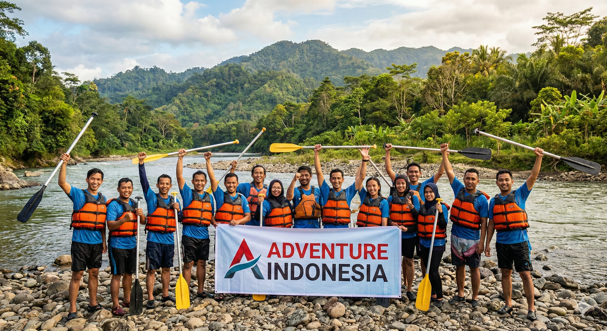
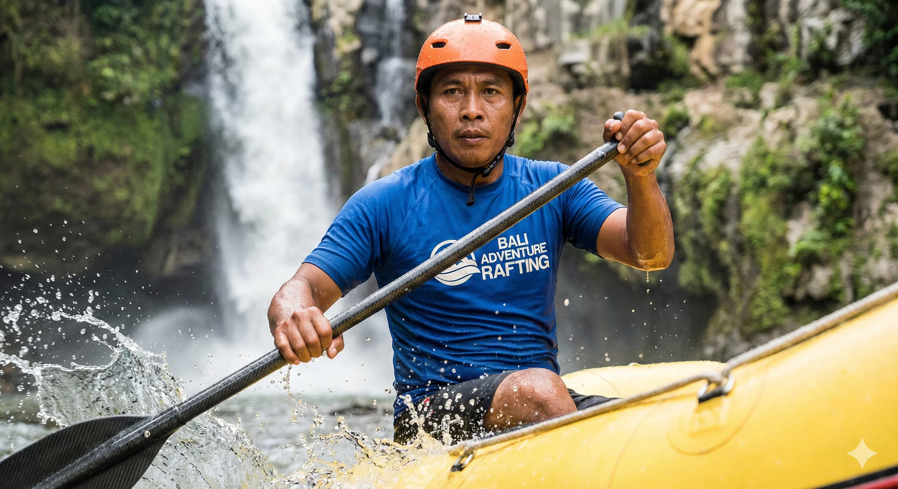

Peserta rafting menaklukkan jeram di Sungai Kaliwatu Batu Malang yang memacu adrenalin.
Sungai Kaliwatu adalah salah satu destinasi rafting terbaik di Batu Malang yang menawarkan pengalaman arung jeram mendebarkan. Terletak di kawasan pegunungan Kota Batu, Jawa Timur, sungai ini dikenal dengan arusnya yang menantang, airnya yang jernih, serta pemandangan alam yang luar biasa indah. Setiap tahun, ribuan wisatawan dari berbagai daerah datang untuk merasakan sensasi rafting di sungai yang panjangnya mencapai 5 kilometer ini.
Dengan tingkat jeram yang bervariasi mulai dari grade 2 hingga grade 4, Sungai Kaliwatu cocok untuk berbagai kalangan, mulai dari pemula yang baru pertama kali mencoba arung jeram hingga petualang berpengalaman yang mencari tantangan lebih. Keindahan panorama di sepanjang aliran sungai menjadi daya tarik tersendiri yang membedakan Sungai Kaliwatu dari spot rafting lainnya di Jawa Timur.
Mengenal Sungai Kaliwatu Batu Malang
Sungai Kaliwatu secara geografis terletak di lereng Gunung Panderman, Kota Batu, Jawa Timur. Sungai ini mengalir dari mata air pegunungan yang jernih dan segar, melewati hutan-hutan lebat serta tebing-tebing batu yang dramatis. Nama "Kaliwatu" berasal dari bahasa Jawa yang artinya "sungai batu", merujuk pada banyaknya formasi batuan alami di sepanjang aliran sungai.
Dengan ketinggian sekitar 700-900 meter di atas permukaan laut, suhu udara di sekitar Sungai Kaliwatu terasa sejuk dan menyegarkan, berkisar antara 18-25 derajat Celcius. Kondisi ini membuat pengalaman rafting terasa semakin menyenangkan, terutama saat cuaca cerah. Air sungai yang bersumber dari mata air alami juga sangat jernih, bahkan di beberapa bagian Anda bisa melihat dasar sungai dengan jelas.
Pemandangan alam hijau yang memukau di sepanjang Sungai Kaliwatu menambah keseruan rafting.
Karakteristik Aliran Sungai
Aliran Sungai Kaliwatu memiliki karakteristik unik yang menjadikannya spot rafting favorit. Sungai ini memiliki panjang jalur rafting sekitar 5 kilometer dengan durasi perjalanan 2-3 jam. Sepanjang jalur, peserta akan melewati sekitar 15-20 jeram dengan berbagai tingkat kesulitan, mulai dari jeram kecil yang menyenangkan hingga jeram besar yang memacu adrenalin.
- Grade 2 (Mudah): Jeram ringan dengan arus sedang, cocok untuk pemanasan awal.
- Grade 3 (Menengah): Jeram dengan arus lebih kencang dan ombak yang lebih tinggi, memerlukan koordinasi tim.
- Grade 4 (Sulit): Jeram besar dengan arus deras dan batu-batu besar, sangat menantang bagi petualang sejati.
"Rafting di Sungai Kaliwatu memberikan pengalaman yang tak bisa dilupakan. Perpaduan antara adrenalin, keindahan alam, dan kebersamaan tim membuat setiap momen terasa istimewa." — Tim Guide Rafting Batu Malang
Persiapan Sebelum Rafting di Kaliwatu
Sebelum memulai petualangan rafting di Sungai Kaliwatu, ada beberapa hal penting yang perlu Anda persiapkan agar pengalaman arung jeram berjalan lancar, aman, dan menyenangkan. Persiapan yang matang akan memastikan Anda mendapatkan pengalaman terbaik selama rafting.
Peralatan yang Wajib Dibawa
Meski peralatan utama rafting seperti perahu karet, dayung, helm, dan pelampung sudah disediakan oleh operator, ada beberapa perlengkapan pribadi yang sebaiknya Anda bawa:
- Pakaian ganti: Siapkan pakaian kering yang nyaman untuk dikenakan setelah rafting selesai.
- Sepatu anti selip: Gunakan sepatu yang tidak mudah selip dan bisa terkena air, bukan sandal jepit.
- Sunscreen waterproof: Lindungi kulit dari sinar matahari dengan tabir surya tahan air.
- Kamera waterproof: Abadikan momen seru selama rafting dengan kamera tahan air atau action camera.
- Handuk: Jangan lupa membawa handuk untuk mengeringkan badan setelah aktivitas.
Baca Juga:
Tips Keselamatan Rafting di Batu Malang yang Wajib Diketahui Panduan Lengkap Rafting untuk Pemula di Batu MalangRute dan Spot Jeram Terbaik
Jalur rafting Sungai Kaliwatu dibagi menjadi beberapa segmen, masing-masing dengan karakteristik jeram yang berbeda. Setiap segmen memberikan tantangan dan pengalaman yang unik bagi peserta. Berikut adalah rincian rute yang akan Anda lalui saat rafting di Sungai Kaliwatu.
Segmen 1: Start Point - Pemanasan
Segmen pertama merupakan zona pemanasan di mana peserta akan dikenalkan dengan teknik dasar mendayung dan komando dari guide. Di segmen ini, jeram masih tergolong ringan dengan grade 2. Anda bisa menikmati keindahan hutan dari atas perahu sambil mempersiapkan diri untuk tantangan selanjutnya. Air yang tenang di segmen ini juga menjadi kesempatan untuk beradaptasi dengan suhu air sungai yang segar.
Segmen 2: Zona Tantangan
Memasuki segmen kedua, intensitas jeram meningkat ke grade 3. Di sini Anda akan merasakan ombak yang lebih besar dan arus yang lebih kencang. Tebing-tebing batu di kedua sisi sungai menciptakan pemandangan yang dramatis. Guide profesional akan memandu Anda menavigasi jeram-jeram ini dengan komando yang jelas dan tepat. Koordinasi tim menjadi sangat penting di segmen ini.
Peserta menavigasi jeram grade 3 di segmen kedua Sungai Kaliwatu yang menantang.
Segmen 3: Puncak Adrenalin
Segmen ketiga adalah highlights dari rafting di Sungai Kaliwatu. Di segmen ini terdapat beberapa jeram grade 4 yang sangat menantang. Ombak besar, arus deras, dan batu-batu besar akan menguji keberanian dan kekompakan tim Anda. Namun jangan khawatir, guide profesional kami selalu siap memastikan keselamatan Anda. Momen di segmen ini biasanya menghasilkan foto-foto terbaik dan cerita yang paling seru untuk diceritakan.
Fasilitas yang Tersedia
Operator rafting di Sungai Kaliwatu menyediakan berbagai fasilitas lengkap untuk kenyamanan peserta. Mulai dari base camp yang terletak di start point hingga finish point, semua sudah dipersiapkan dengan baik.
- Base camp nyaman: Area istirahat yang bersih dan teduh di start point dan finish point.
- Peralatan lengkap: Perahu karet berkualitas, dayung, helm safety, dan pelampung standar internasional.
- Guide profesional: Guide bersertifikat dengan pengalaman lebih dari 5 tahun.
- Makan siang: Menu makan siang yang lezat setelah rafting selesai.
- Dokumentasi foto: Tim fotografer profesional yang mendokumentasikan setiap momen.
- Toilet dan kamar ganti: Fasilitas kebersihan yang terjaga dengan baik.
- Parkir luas: Area parkir yang aman untuk kendaraan peserta.
- Asuransi kecelakaan: Setiap peserta otomatis mendapatkan asuransi kecelakaan selama aktivitas.
🚣 Promo Spesial Rafting!
Dapatkan diskon hingga 30% untuk rombongan minimal 10 orang. Hubungi kami sekarang!
Pesan SekarangTips Menikmati Rafting di Kaliwatu
Agar pengalaman rafting Anda di Sungai Kaliwatu berjalan optimal, berikut beberapa tips yang bisa Anda terapkan. Tips-tips ini berdasarkan pengalaman kami selama bertahun-tahun melayani wisatawan di Sungai Kaliwatu.
- Datang pagi hari: Waktu terbaik untuk rafting adalah pagi hari sekitar pukul 08.00-10.00, ketika cuaca masih sejuk dan sinar matahari belum terlalu terik.
- Makan sebelum rafting: Pastikan Anda sudah sarapan dengan porsi cukup, tapi jangan terlalu kenyang, minimal 1-2 jam sebelum aktivitas.
- Dengarkan briefing: Perhatikan dengan seksama briefing keselamatan dan teknik mendayung dari guide sebelum memulai.
- Ikuti komando guide: Selalu ikuti instruksi guide selama rafting berlangsung untuk keselamatan semua peserta.
- Nikmati pemandangan: Jangan lupa sesekali menikmati keindahan alam di sekitar sungai, jangan hanya fokus pada jeram.
- Booking jauh hari: Terutama saat weekend atau liburan, pastikan Anda sudah melakukan reservasi minimal 2-3 hari sebelumnya.
Peserta menikmati keindahan alam sekitar sungai di antara sesi jeram yang menantang.
Harga dan Paket Rafting Kaliwatu 2026
Berikut daftar harga dan paket rafting yang tersedia di Sungai Kaliwatu Batu Malang untuk tahun 2026. Harga sudah termasuk peralatan lengkap, guide profesional, dan asuransi.
- Paket Fun (Grade 2-3): Rp 150.000/orang — Ideal untuk pemula dan keluarga.
- Paket Challenge (Grade 3-4): Rp 250.000/orang — Untuk petualang yang suka tantangan.
- Paket Premium (All Grade): Rp 400.000/orang — Paket lengkap dengan makan, dokumentasi, dan fasilitas VIP.
- Paket Rombongan (min. 10 orang): Harga spesial, hubungi kami untuk penawaran terbaik.
"Investasi terbaik bukan selalu soal uang. Kadang, pengalaman dan kenangan bersama orang tersayang di alam terbuka jauh lebih berharga." — Filosofi Rafting Batu Malang
Lokasi dan Cara Akses
Sungai Kaliwatu berlokasi di Kecamatan Bumiaji, Kota Batu, Jawa Timur. Lokasi ini dapat ditempuh dengan mudah dari berbagai arah:
- Dari Kota Malang: Sekitar 45 menit berkendara melalui Jalan Raya Batu-Selecta.
- Dari Surabaya: Sekitar 2.5 jam melalui Tol Pandaan-Malang kemudian menuju Kota Batu.
- Dari Stasiun Malang: Sekitar 1 jam menggunakan kendaraan pribadi atau menyewa mobil.
- Dari Bandara Abdulrachman Saleh: Sekitar 1.5 jam berkendara menuju Kota Batu.
Jalan menuju lokasi rafting sudah beraspal dengan kondisi baik dan bisa dilalui oleh semua jenis kendaraan, termasuk bus pariwisata. Tersedia juga petunjuk arah yang jelas di sepanjang jalan menuju base camp rafting.
🎉 Booking Sekarang, Bayar Nanti!
Reservasi dulu, bayar saat datang. Mudah dan tanpa ribet!
Reservasi via WAKesimpulan
Rafting di Sungai Kaliwatu Batu Malang adalah pengalaman wisata petualangan yang wajib dicoba bagi siapa saja yang berkunjung ke Jawa Timur. Dengan kombinasi jeram yang menantang mulai dari grade 2 hingga grade 4, pemandangan alam yang memukau, fasilitas lengkap, serta guide profesional yang berpengalaman, Sungai Kaliwatu layak menyandang predikat sebagai salah satu spot rafting terbaik di Indonesia.
Baik Anda datang bersama keluarga, teman-teman, rekan kerja, atau bahkan sendirian, rafting di Sungai Kaliwatu menjanjikan pengalaman yang tak terlupakan. Jangan lewatkan kesempatan untuk merasakan serunya arung jeram di sungai yang indah ini. Segera hubungi kami untuk reservasi dan dapatkan pengalaman petualangan terbaik Anda!
FAQ - Pertanyaan Umum
Ahmad
Penulis dan pecinta alam yang sudah berpengalaman lebih dari 5 tahun dalam dunia wisata petualangan. Aktif mengeksplorasi spot-spot rafting terbaik di Indonesia dan berbagi pengalaman melalui tulisan.